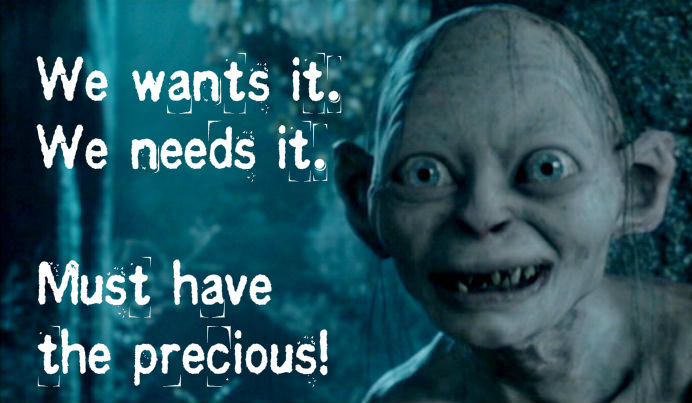
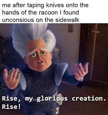

Hello DYLAN LOVES WEBSITES
They are his favourite things
.
.
.
One could say they are

HIS PRECIOUS
There are so many cool things about Websites that no one knows, like how what im saying here is part of a paragraph where you thought it was a head! I bet you had you dont even know what either of those things are ! LOOOOOOOOOOOOOOOL! sometimes you can even use lists because you need to list something. such as the reasons why Dylan loves websites so much
WHY DYLAN LOVES WEBSITES
A comprehensive list
- Websites let you surf the web with relative ease
- They let you download games from your favourite places to do that like here
- You can also lmao all the time with glorious memes

- You could also use it to connect to other poeple. I once had an extremly wise and smart and funny and great lecturer who told me that i had to create a Twitter account to connect with people in the game industry
- And obviously... The Hub ;0 (this is corn hub the corn one please dont fail me)
The internet as a whole is used for such a viariety of things that i could never fit the entirety of its usefulness as in a simple ordered list. I think I've done a decent job at it however if you can think of any other uses follow this link righty here